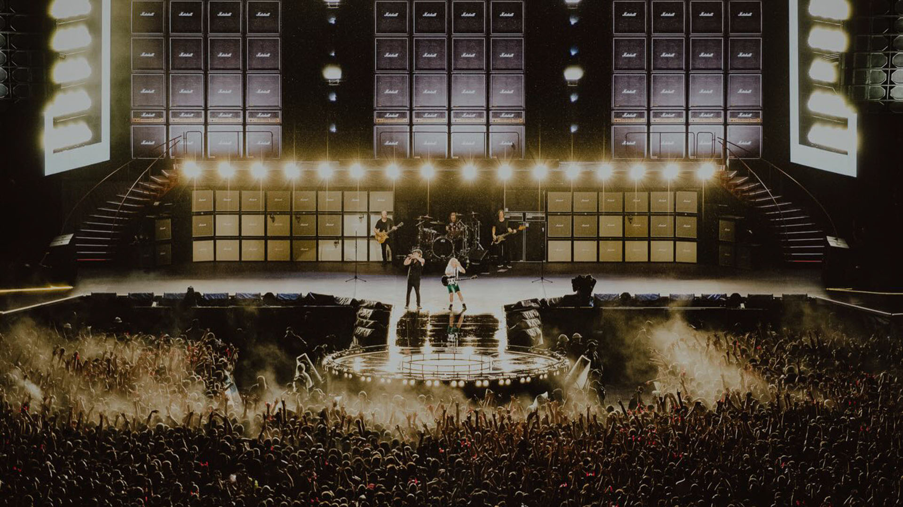

.jpg)
Después de dos noches explosivas que marcaron el regreso de la banda al país tras más de una década, AC/DC volvió a llenar River en la tercera y última fecha de su paso por la Argentina, en el marco de la gira Power Up Tour, una despedida cargada de clásicos y emoción que tuvo además el especial festejo de los 71 años de Angus Young, el legendario guitarrista de la banda.
Fue una jornada especial desde el principio. Desde las tres de la tarde, llegar a River fue una odisea. Los fans se prepararon desde temprano para despedir a AC/DC, tal vez para siempre. ¿Habrá oportunidad de que regresen al país? ¿Habrá otra gira mundial? ¿O deberemos resignarnos a que la noche de este martes sea la última en el país, la que quede en la retina de los afortunados que pudieron estar en Núñez?
Cierto que las tres noches fueron especiales. La del 23 de marzo, por ser la primera y marcar el reencuentro de AC/DC con su público. La del 27, la de la lluvia épica, con músicos y fanáticos mojados y felices. Y la de este 31, por el cierre y por el "cumpleaños feliz" para Angus Young, el hombre del eterno uniforme escolar, con su saquito y sus pantalones cortos.
Los fanáticos argentinos esperaban este reencuentro después de la primera visita de la banda en octubre de 1996 con el Ballbreaker Tour y de su recordado regreso en diciembre de 2009 con el Black Ice Tour, cuando ofrecieron tres funciones agotadas en River que luego quedaron inmortalizadas en el álbum y DVD Live at River Plate. Esta vez, 17 años después, el último show volvió a convertir al Monumental en una fiesta de alto voltaje, a pesar del calor y la humedad de la noche porteña.
